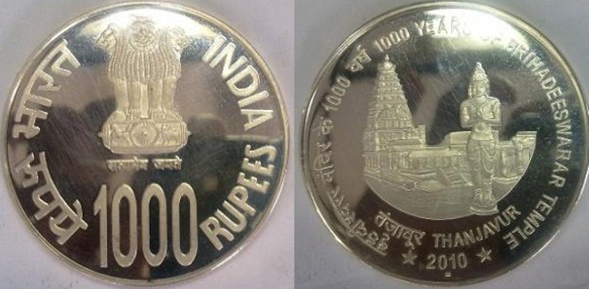

- Currency is composed of cotton and cotton rag.
- 5,000 and 10,000 rupees notes were in circulation between 1954 and 1978
- After Independence, Pakistan used Indian Rupee notes stamped with 'Pakistan' until it could print enough.
- One rupee notes are issued by the Ministry of Finance and bear the signature of the Secretary.
- Rs.500 and Rs.1000 notes are banned in Nepal.
- At one time, 5 rupee coins were smuggled to Bangladesh for making razors.
- To type the symbol of the rupee, you need to press 'Ctrl+Shift+$'.

- Cost of minting 10 rupee coins is 6.10 crores
- Because of shortage, the RBI has been forced to mint coins in foreign countries in the past.
- Apart from Hindi and English which appear on the front side of a note, 15 other languages appear on the reverse side.
- If you have a torn note, or more than 51% of its torn part, you can exchange it for a new one at a bank.
- In 1917, the rupee was mightier than the $. 1 rs = 13 USD to be precise.
- All notes carry an imprint of something Indian. Like the rs.20 note carries the imprint of the Andaman Islands.
- Zero rupee notes were issued by the NGO 5th Pillar to fight corruption.
- Currency has existed in the form of coinage in India since the 6th century BC. The Ancient, the medieval and the Mughal period all used currency in the form of coinage. The most notable was Sher Shah Suri's Rupiya, which became the precursor of the modern rupee.
- Paper money was first issued in the late eighteenth century. Bank of Hindostan, General Bank in Bengal and the Bengal Bank are the first banks to have issued paper currency.
- Government of India's first set of notes was the Victoria portrait series. For security reasons, the notes of this series were cut in half; one half was sent by post, and upon confirmation of receipt, the other half was sent. They were replaced by the Underprint series in 1867.
- The Reserve Bank of India was formally inaugurated in 1935 and was empowered to issue Government of India notes. The first note issued by the RBI was a five rupee note bearing King George VI's portrait.
- The one rupee note was the first banknote printed by independent India.
- Denominations of 1 paise, 2 paise, 3 paise, 5 paise, 10 paise, 20 paise and 25 paise were in circulation till June 30, 2011 but were then withdrawn.
- 50 paise coins are still in circulation. They are called small coins while the other denominations are known as rupee coins.
- Mahatma Gandhi (MG) series notes introduced in 1996 are being replaced by the MG series 2005 notes with some additional security features. Pre-2005 banknotes can be exchanged at any bank branch till June 30, 2015.
- D.Udaya Kumar is the creator of the rupee symbol. The symbol was derived from Devanagari letter (ra). The symbol is a combination of the Latin letter “R” and devnagiri letter"ra"

- 75, 100, 1000 rupees coin were first made in 2010. It was only for the commemorative purposes. They were made to celebrate 75 years of Reserve Bank of India, 100 years of Rabindranath Tagore and 1000 years of Brihadeeswarar temple.

- 500 rupees note was introduced in 1987 and 1000 rupee note was introduced in 2000.
- Indian currency notes are printed at Currency Note Press in Nashik, the Bharatiya Note Mudra Nigam (P) presses at Salboni and Mysore, Watermark Paper Manufacturing Mill in Hoshangabad.
- After the independence of India the first coins were introduced in 1950. It was made of Cupro-nickel. In 1964 aluminum coins were first introduced for up to 20 paisa. Stainless steel coins (10, 25, and 50) were first introduced in 1988.
- At one point there were two currencies operating in India. It was Hyderabadi Rupee from 1918 to 1959. It coexisted with Indian rupee from 1950
- On Indian Rupees you can’t find these “I, J, O, X, Y, Z” alphabets / letters on the number panel. As in these case RBI only have twenty alphabets are used as insets. For security reasons, Reserve Bank of India doesn’t reveal which inset alphabet/ letters are assigned for which printing press.
- Our Indian currency have Braille signs to help the visually challenged, which gives hope to the blind –identify currency note. There were identification mark’s on the left side of banknote, which have different shapes for 1000, 500, 100, 50, 20 and 10 as Diamond, Circle, Triangle, Square, Rectangle and None respectively.
- Is anyone observe * (star) in the number panel between the prefix and the serial number, these are special series of currency notes known as “Star Series”. RBI released to replace defectively printed notes.

- At the time of independence, the division of the rupee was in annas. 16 annas used to make one rupee. Theanna was further divided into 4 paisas or 12 pies. Nowadays, the rupee is divided into paisa and 1 rupee is equal to 100 paisa. The decimalization of the rupee took place in 1947. In this, the rupee was divided into 100 naya paisa (nayameans new). The word naya was later on dropped in 1964.
- In 2007, an acute shortage of coins gripped the eastern Indian city of Calcutta, which saw shopkeepers begging change from beggars and buying coins at prices above their face value.One reason being that the coins were smuggled to Bangladesh to make razors.
(Image: A woman selling stacks of 100 rupee coins (USD$ 2.5) for 120 rupees (UDS$ 3), counts notes at a bus stand in Calcutta, India Friday, June 15, 2007)
- A rare 5-rupee note, dated January 5, 1916, issued by the Government of India in Karachi was sold for £3,100 ($5,297 U.S.) in a London auction conducted by Spink last year.
Karachi was then part of India, until 1947
- Ever wondered how the old notes are destroyed?
According to the data obtained by RTI activist Manoranjan Roy, 11,661 crore notes lost their usable value (between 2001 and now) and were shredded to bits, to be later balled or gummed together, and be reborn as coasters, paper-weights, pen stands, key chains.
In 2010-11 alone, 1,385 crore notes worth Rs 1,78,830 crore were destroyed.
- The rupee was the currency of several other countries like Aden, Oman, Kuwait, Bahrain, Qatar, the Trucial States, Kenya, Uganda, the Seychelles and Mauritius in the early 20th Century.
- In 2013, a Mumbai-based jewelry chain launched Sachin Tendulkar gold and silver coins on the occasion of 'Akshay Tritya.' The cost of a 10-gm was Rs 34,000 (US$620) (Image above)
In 2014, Britain’s premium luxury goods brand East India Company issued an exclusive legal tender gold coin worth 12,000 pound sterling (about Rs 12 lakh) in honour of Sachin Tendulkar.
- The tooled one rupee coin (with the portrait of King George VI, i.e., the Head on both the sides) in the 1975-cult classic 'Sholay', was bought by a Bollywood fan for Rs 26000 at an auction last year.